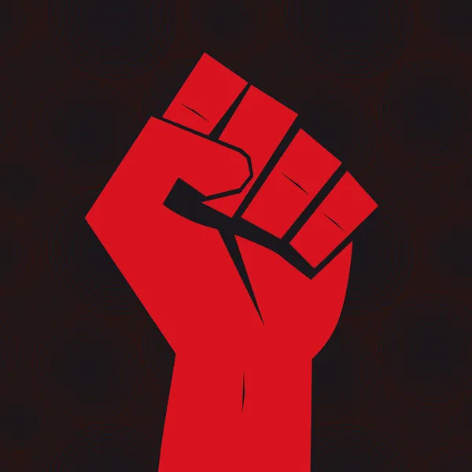
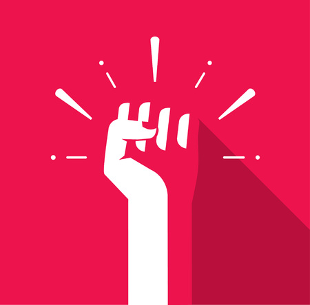
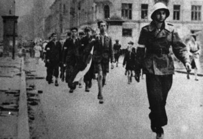
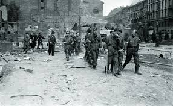
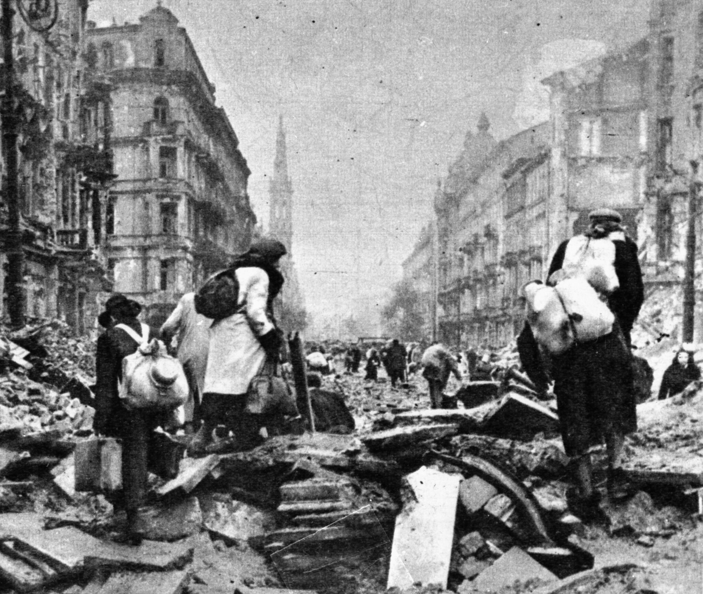
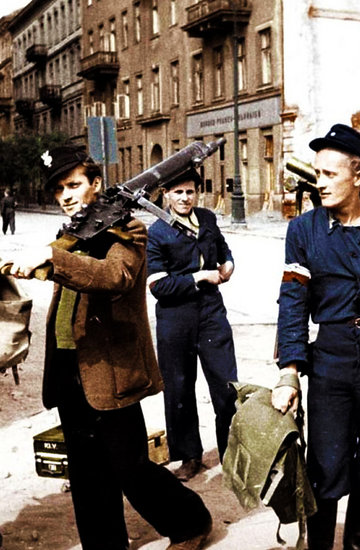
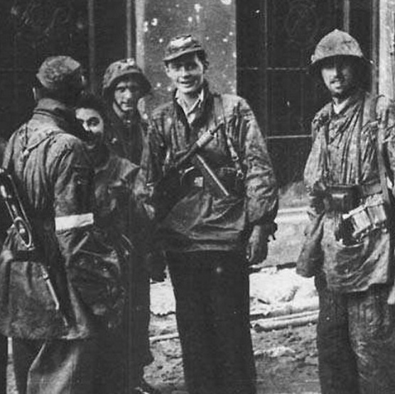
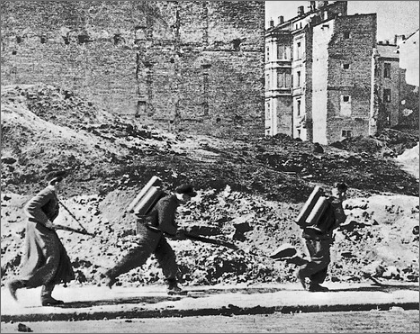

Jesienią 1943 stało się jasne, że Polska nie zostanie wyzwolona spod okupacji niemieckiej przez wojska aliantów zachodnich, lecz zajęta przez Armię Czerwoną.

Powstanie Warszawskie
Dni polskiego honoru
Pomoc ze strony ZSRR - "Plan Burza"
Plan „Burza” zakładał opanowanie Warszawy przez powstańców i przywitanie Armii Radzieckiej w roli gospodarza; nadzieja na akceptacje rządu londyńskiego przez Sowietów.
„Współpraca z Armią Czerwoną układała się poprawnie. Tragedia rozpoczynała się po zakończeniu działań zbrojnych - oficerowie AK byli aresztowani, przez NKWD zaś oddziały rozbrajane lub włączane do armii Berlinga.”
Decyzja o rozpoczęciu powstania
22 lipca 1944 gen. Komorowski zakomunikował swojemu sztabowi decyzję o podjęciu walki z Niemcami w Warszawie. Głównym pomysłodawcą był jednak gen. Leopold Okulicki „Niedźwiadek”. Kulickiemu bardzo zależało na zajęciu Warszawy przez AK, zanim zjawią się w niej Rosjanie.
Po podjęciu decyzji o powstaniu w Warszawie do ustalenia pozostawał tylko termin jego wybuchu.
„Gen. Bór-Komorowski po konsultacji z szefem sztabu gen. Pełczyńskim, szefem operacji gen. Okulickim, komendantem okręgu płk. Chruścielem i delegatem rządu na kraj Janem Jankowskim podjął decyzję o rozpoczęciu powstania w Warszawie o godz. 17:00 następnego dnia - 1 sierpnia 1944."
Przebieg powstania
Dzień 1
Godz. 7.00 – łączniczki alarmowe otrzymują rozkaz Komendanta Okręgu Warszawskiego AK płk. dypl. Antoniego Chruściela „Montera” o ustaleniu Godziny „W” na 1 sierpnia, godzina 17.00.
Dzień 17
17 sierpnia nieprzyjaciel prowadzi silny ostrzał Starego Miasta, burząc kamieniczki.
Dzień 31
31 sierpnia, w nocy z 30 na 31 sierpnia Powstańcy podejmują próbę połączenia Śródmieścia ze Starym Miastem.
Dzień 39
8 września, podczas zawieszenia ognia kilka tysięcy cywilów dobrowolnie opuszcza Warszawę. Od rana trwa silny napór nieprzyjaciela na Śródmieście Północ. Wróg usiłuje wedrzeć się w głąb dzielnicy od strony Nowego Światu i Królewskiej.
Dzień 63
2 października, od godz. 5.00 obowiązuje zawieszenie broni. Do godz. 19.00 Warszawę opuszcza ok. 16 tys. mieszkańców. Po dwóch dniach ewakuacji w Śródmieściu pozostaje nadal ponad 80 proc. ludności cywilnej.
Jestem przekonany, że etos powstania warszawskiego nie kieruje narodowej wyobraźni w stronę apologii romantycznej klęski. Etos powstania warszawskiego buduje współczesne poczucie służby, współczesne poczucie skromności Szarego Szeregu, bezwarunkowego poświęcenia własnych spraw na rzecz wolności wspólnej.
- Bronisław Komorowski
Skutki powstania
Przegrane powstanie niosło za sobą wiele konsekwencji i negatywnych skutków, jednak miało też trochę pozytywnych.

Pozytywne
Pozytywnymi stronami powstania głównie to że jest momentem przełomowym w tradycji powstań Polaków i to że jest to jedno z nielicznych powstań w Europie w którym społeczność potrafiła zrobić taki wielki zryw i walczyć ku wyzwoleniu swojej ojczyzny.

Negatywne
- po upadku powstania wiele ludzi trafiło do obozów koncentracyjnych
- wiele ludzi zginęło
- Hitler kazał zrównać Warszawę z ziemią
- w efekcie upadku powstania w znacznym stopniu obniżył się potencjał Polskiego Państwa Podziemnego i Delegatury Rządu na Kraj oraz Armii Krajowej, które nie zdołały zapobiec planom politycznym Stalina w stosunku do powojennej Polski.
Tak, właśnie to, że to już spokój. Koniec. Po wszystkim. Dwieście tysięcy ludzi leży pod gruzami. Razem z Warszawą.
- Miron Białoszewski, Pamiętnik z powstania warszawskiego
Galeria zdjęć





